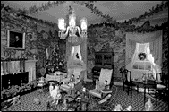

The Minneapolis Institute of Arts
Main Menu ~ Permanent Collection List ~ Interactive Museum Maps ~ Back ~ Next
Period Rooms
 (c) 43k
Move through history in nine period rooms, which include an English Tudor room, two rooms from a house in Charleston, South Carolina dating from the 1770s, and a late 18th-century French room.